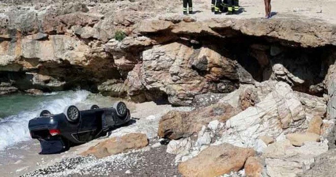
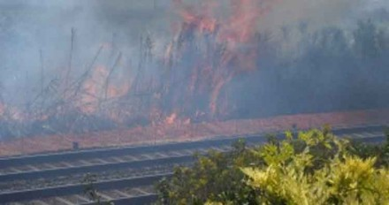
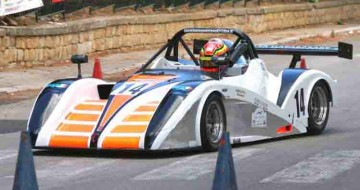
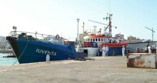

Custonaci
Due donne sono rimaste ferite in un incidente avvenuto oggi pomeriggio, intorno alle 15, in località Frassino di Custonaci.

di Redazione
25 Agosto 2017 - L?auto su cui si trovavano è precipitata dalla scogliera denominata ?i cuticchi?. Secondo le prime ricostruzioni pare che, durante una manovra, il veicolo abbia improvvisamente accelerato invece di
Alcamo

Un incendio vicino ai binari ha costretto la sospensione della circolazione ferroviaria
di Redazione
7 Agosto 2017 - Circolazione ferroviaria sospesa, ieri pomeriggio, per un incendio sviluppatosi lungo la linea ferroviaria Palermo-Trapani. L?episodio è avvenuto intorno alle alle 15.30 fra Alcamo Diramazione e Castelvetrano. Le fiamme,
di Redazione
Presentato stamattina nell?Aula consiliare del Palazzo Municipale di Erice il programma della stagione estiva

Buseto Palizzolo
di Redazione
Il busetano Antonio Virgilio domina la 4ª edizione dello Slalom Monti Sicani Città di Prizzi
Cronaca
Sarebbero quindici le persone iscritte nel registro degli indagati dai magistrati della Procura della Repubblica di Trapani
Attualità

Le strumentazioni a bordo della ?Iuventa? potrebbero essere state oggetto di un attacco hacker da parte di gruppi anti-migranti
Sport
Politica
Trapani
-
La Regione nomina Daniela Virgilio nel CdA di Airgest. Critico Piero Savona che parla di ?appartenenza a fazioni?
Daniela Virgilio è stata nominata dalla Regione Siciliana componente del Consiglio di Amministrazione di Airgest
MEDIA
Ultime News